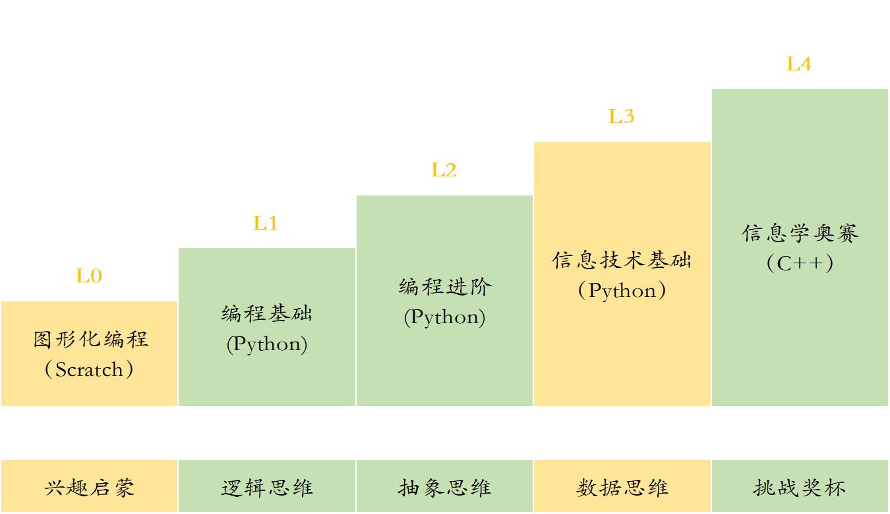
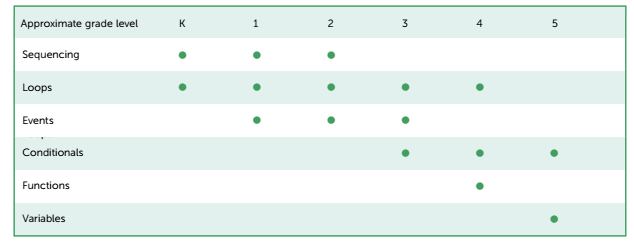

课程介绍¶
每个人都应该学习编程，因为它教会你思考。—— 乔布斯

立乐课程介绍¶
立乐课程共分为5个阶段，满足6~18岁学员的不同需求。不同阶段的学员都可以选择最合适自身的课程开始学习。 
课程特色¶
PBL式教学¶
以问题为导向的教学方法（PBL，Problem-based Learning项目式学习）的教学方式，寓教于乐，打造适合孩子的轻松课堂，不再刻板枯燥，让孩子爱上编程。
与传统的以学科为基础的教学法有很大不同，PBL 强调以学生的主动学习为主，而不是传统教学中的以教师讲授为主； PBL 将学习与更大的任务或问题挂钩，使学习者投入于问题中；它设计真实性任务，强调把学习设置到复杂的、有意义的问题情景中，通过学习者的自主探究和合作来解决问题，从而学习隐含在问题背后的科学知识，形成解决问题的技能和自主学习的能力。
成熟的课程标准¶
参照最适用原则，我们的课程参考了美国CSTA标准、教育部最新信息技术课程标准、NOIP等权威标准，经过教学实践双重验证，开发出适合中国青少年的编程课程体系，让孩子领跑未来。
各个阶段的课程介绍¶
Scratch图形化编程（L0）¶
兴趣启蒙阶段，针对6-8岁的少儿，最重要的是让他们对编程产生兴趣，正确引导少儿对计算机的认识。
Python 图形化编程（L1）¶
通过图形化编程，锻炼孩子的逻辑思维能力。
逻辑思维能力不仅是学好编程必须具备的能力，也是学好其他学科，处理日常生活问题所必须的能力。
编程是用计算机来反映客观世界的一门学科，逻辑性很强、很严密，通过学习编程，在思考分析问题和完成程序的过程中培养逻辑思维能力。
Python 趣味编程（L2）¶
这个阶段的少儿正是开始产生抽象思维的时候，通过学习编程强化少儿抽象思维。
抽象思维是用词进行判断、推理并得出结论的过程，又叫词的思维或者逻辑思维。抽象思维以词为中介来反映现实，这是思维的最本质特征，也是人的思维和动物心理的根本区别。
Python 科学计算与人工智能（L3）¶
数据思维是根据数据来思考事物的一种思维模式，是一种量化的思维模式，是重视事实、追求真理的思维模式。
在学习编程中，掌握数据之间的相互关系，为将来学习数据分析、大数据等方向打下坚实的基础。
课程依据的是教育部最新制定的信息技术课程标准
NOIP信息学奥赛（L4）¶
优秀的学生可以通过参加NOIP课程，挑战奖杯，获取顶尖学府自主招生的资格。
| 推荐起点 | 课程目标 | |
|---|---|---|
| NOIP普及组课程 | 初中 | 普及组获取奖项 |
| NOIP提高组课程 | 高中 | 提高组获取奖项 |
各个阶段课程对比¶
| 等级 | 阶段 | 工具 | 编码 | 展示 | 项目类型 | 目标 |
|---|---|---|---|---|---|---|
| L0 | 1-2年级 | Scratch | 图形 | 图形 | 动画、游戏 | 兴趣启蒙 |
| L1 | 3-4年级 | Python | 文字 | 图形 | 动画、游戏、工具 | 抽象思维 |
| L2 | 5-6年级 | Python | 文字 | 图形 | 动画、游戏、计算 | 逻辑思维 |
| L3 | 7年级以上 | Python | 文字 | 文字 | 工具、计算、分析 | 数据思维 |
| L4 | 7年级以上 | C++ | 文字 | 文字 | 算法、数据结构 | 挑战奖杯 |
立乐课程标准¶
和其他学科教育标准一样，立乐的编程课程标准分为核心概念和核心实践两部分，其中核心概念侧重在内容领域，而核心实践注重行为。
核心概念¶
算法和规则

计算机系统
什么是计算机，计算机有哪些部分组成
数据和分析
计算机的影响
网络和互联网
核心实践¶
- 培养包容的计算机文化
- 围绕计算机展开合作
- 确认并定义计算问题
- 发展和使用抽象
- 创造计算机作品
- 测试并改善计算机作品
- 关于计算机的交流
课程开发依据的标准¶
参考美国CSTA标准研发，教学实践双重验证，开发出适合中国青少年的编程课程体系，让孩子领跑未来。
CSTA课程标准¶
CSTA，即计算机科学教师协会，由美国计算机协会(ACM)于2004年成立，发展到现在，成员数量已经超过25000名。而且成员构成非常多元化，不仅涵盖了K-12各个阶段（小学、初中、高中）CS 学科的一线教师，还包括大学教师、工业界及政府成员，其他非盈利组织成员，学生父母等。这些成员来自于145个国家。
CSTA 的合作伙伴包括 ACM 和政府基金，谷歌、微软、甲骨文等高科技公司，code.org 等机构， 协会的使命是为全球计算机科学教师赋能，促进计算机科学教育的发展。

与CSTA标准对照关系¶
我们的课程依据CSTA课程标准制定，课程内容与世界标准接轨。
| 立乐标准 | 年龄 | CSTA标准 |
|---|---|---|
| Level 0 | 6-8岁 | Level 1A |
| Level 1 | 9-10岁 | Level 1B |
| Level 2 | 11-12岁 | Level 2 |
| Level 3 | 13-15岁 | Level 3A |
| Level 4 | 16-18岁 | Level 3B |